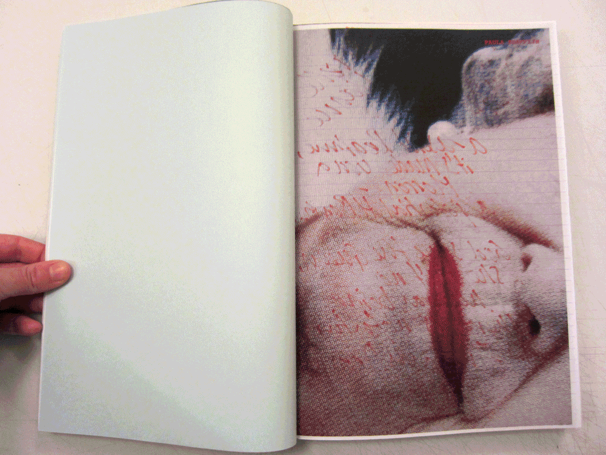
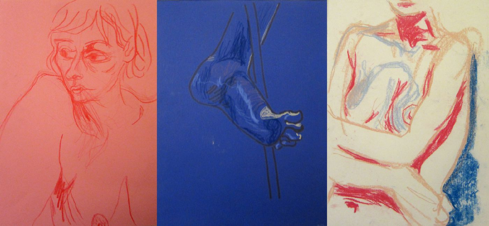
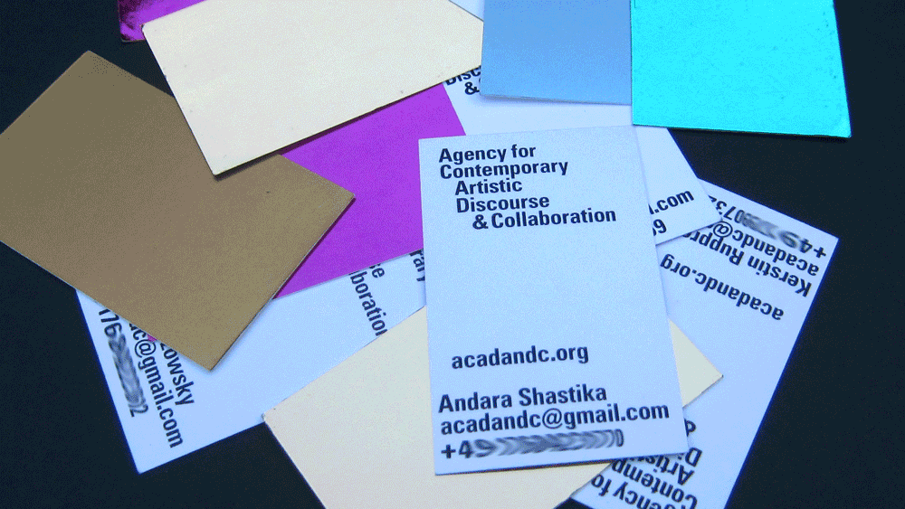
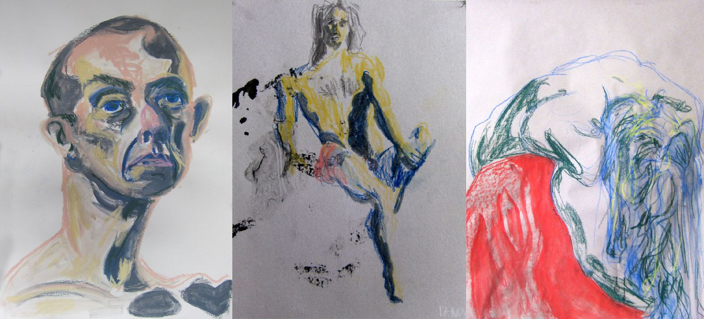
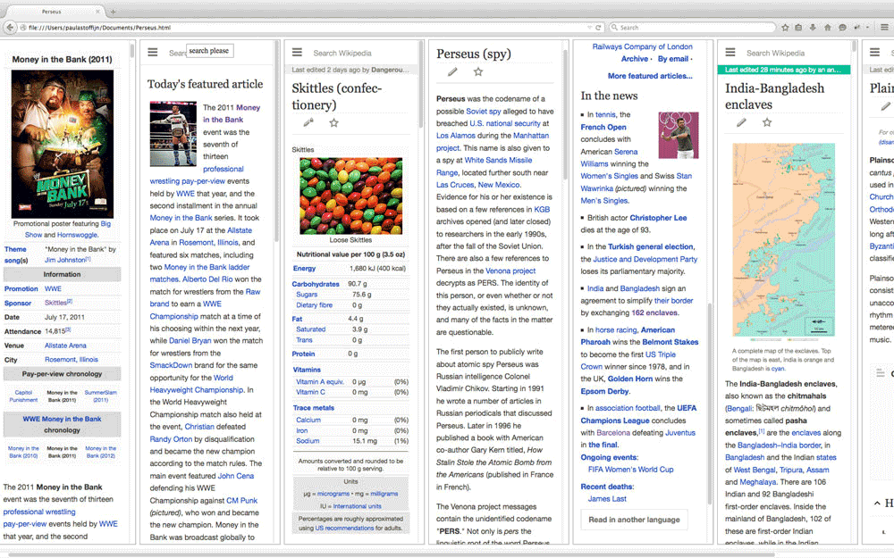
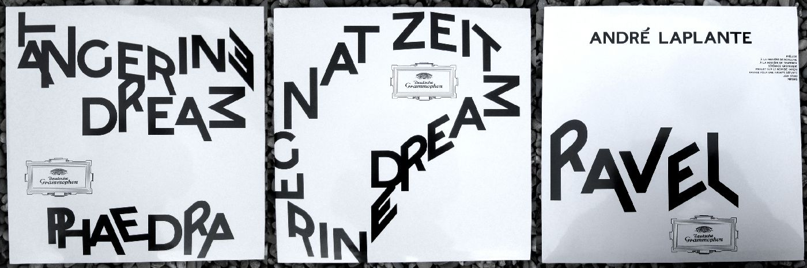
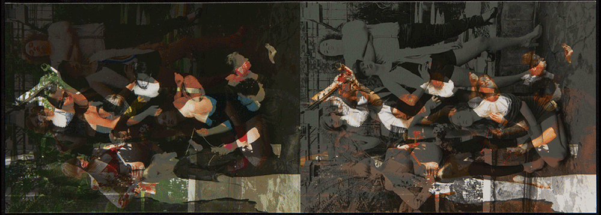
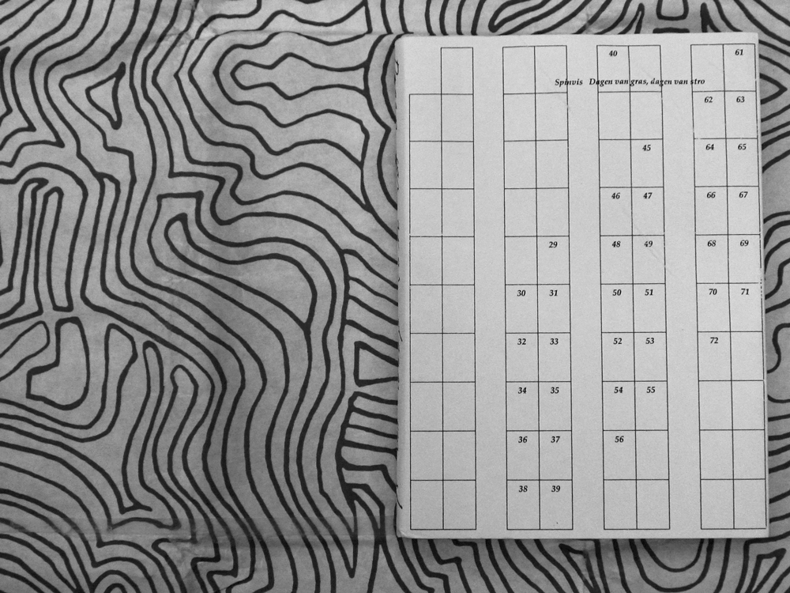
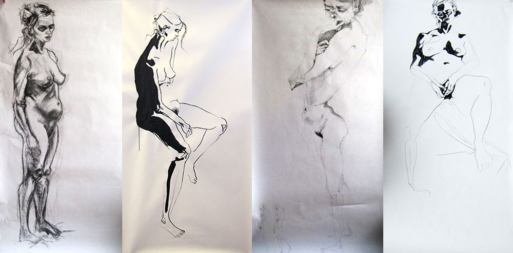

A poster for a three-part performance night and one for a double movie screening. Made at LUCA School of Arts Ghent in 2015-16.

Bijdragen aan een vriendenboek, beantwoord op de vragen wat is je favoriete muziek, favoriete object, denkbeeldige vriend, favoriete cocktail en favoriete einde. Gemaakt aan LUCA School of Arts Gent 2015-16.

Model drawings made at LUCA School of Arts Ghent in 2015-16.

Cards for Agency for Contemporary Artistic Discourse & Collaboration made in 2015 in Kassel.

Model drawings made at LUCA School of Arts Ghent in 2014-15.

Website inspired by the Greek mythology of Perseus. Made at LUCA School of Arts Ghent in 2014-15.

LP covers for Tangerine Dream and Andre Laplante. The typeface is altered to visualize the spaciousness of the music. Made at LUCA School of Arts Ghent in 2014-15.
Cetacea et Cetera, a wunderkammer as a book. About structures, patterns, underwater live etcetera. Made at LUCA School of Arts Ghent in 2014-15.

Flyer for Ontroerend Goed made in Antwerp in 2014.

Dagen van gras, dagen van stro, the song ‘Dagen van gras, dagen van stro’ of Spinvis interpreted as a book. Made at the Royal Academy for Fine Arts in Antwerp in 2013-14.

Model drawings made at the Royal Academy for Fine Arts in Antwerp in 2013-14.